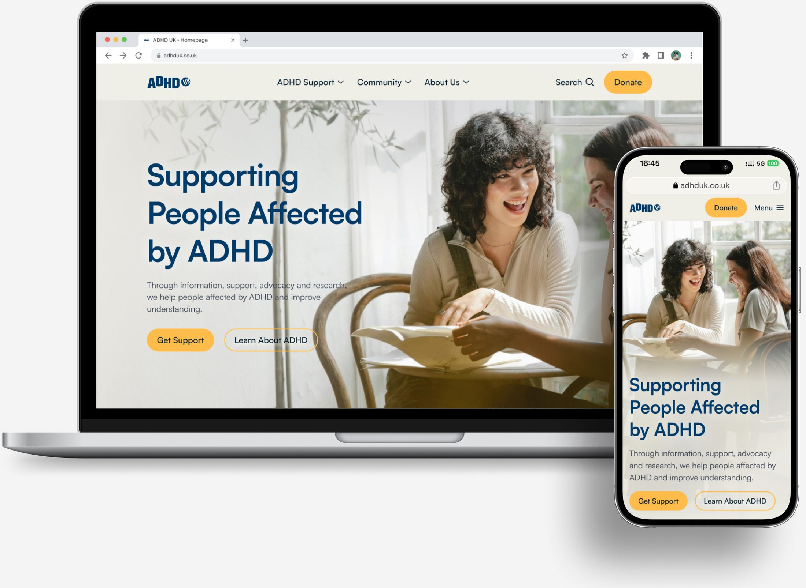

ADHD UK
A responsive website redesign that improved readability from 3.2/10 to 9.8/10 and navigation clarity from 2.5/10 to 8.4/10
View prototypeadhd-uk-prototype.jpg to assets/projects/
Problem Discovery
Through desk research, user interviews, and usability testing, three key usability challenges emerged.
Dense content and excessive information made pages overwhelming and difficult to process for users.
Users struggle to understand where to go or how to find the information they needed.
Outdated visuals, dense layouts, and inconsistent design made the website feel unwelcoming.
How Might We?
My Approach